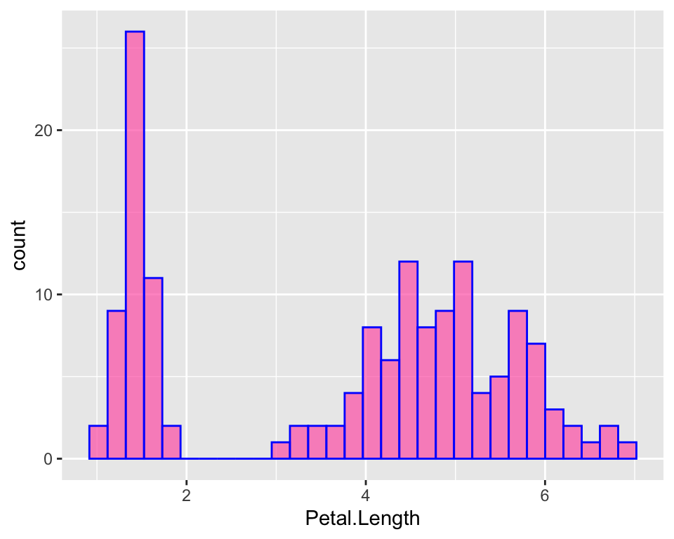
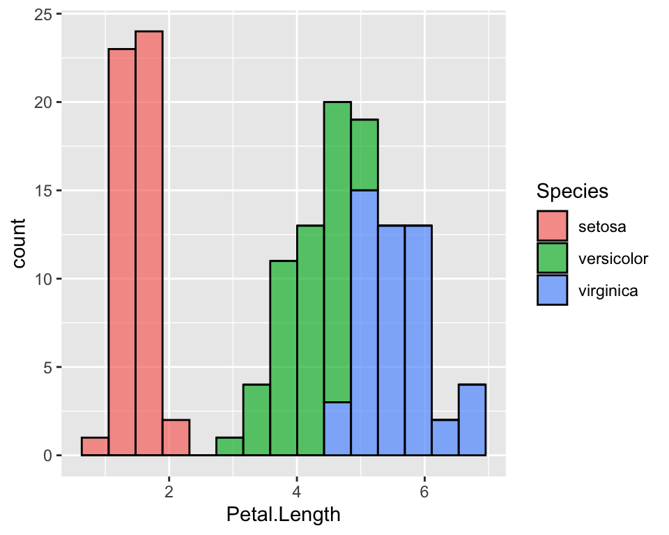
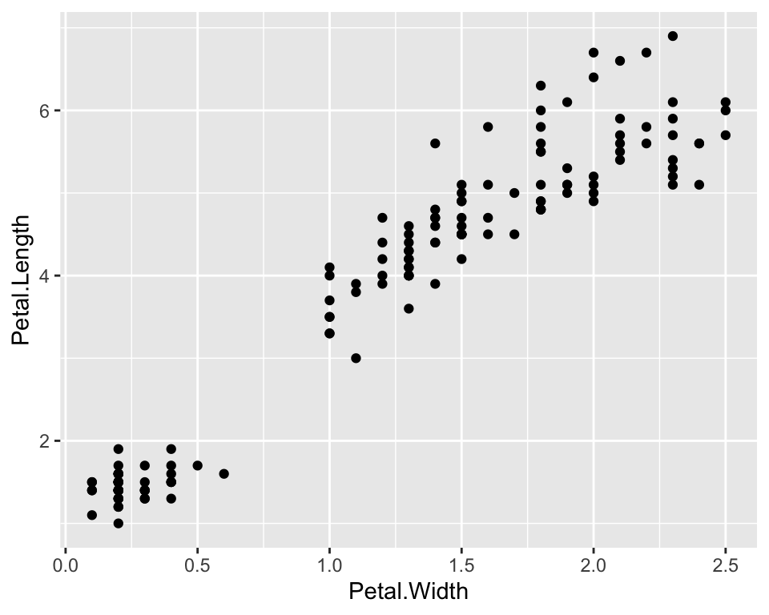
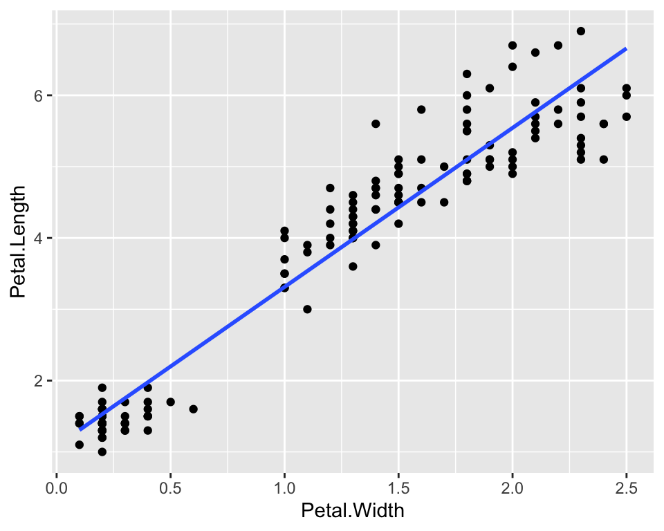

ggplot2 is a very popular R package for data visualisation. In addition to making nice and readable plots, the code is neat and clear which is something to be taken into account when writing code. My coding experience has actually changed since I started using it! In this post, I give some basics of ggplot2 along with some tips on when and why using specific plots either than others.
Let us start with a common dataset in R, the datset iris. We import it:
require(ggplot2)
require(dplyr)
data(iris)and quickly remind its structure:
str(iris)## 'data.frame': 150 obs. of 5 variables:
## $ Sepal.Length: num 5.1 4.9 4.7 4.6 5 5.4 4.6 5 4.4 4.9 ...
## $ Sepal.Width : num 3.5 3 3.2 3.1 3.6 3.9 3.4 3.4 2.9 3.1 ...
## $ Petal.Length: num 1.4 1.4 1.3 1.5 1.4 1.7 1.4 1.5 1.4 1.5 ...
## $ Petal.Width : num 0.2 0.2 0.2 0.2 0.2 0.4 0.3 0.2 0.2 0.1 ...
## $ Species : Factor w/ 3 levels "setosa","versicolor",..: 1 1 1 1 1 1 1 1 1 1 ...To understand what’s in our data, we could first just show some descriptive statistics. First we will see some overall statistics on the four numeric variables and then we will see how such statistics change in the three species:
petal_length_univ_stats <- iris %>%
summarise(n = n(),
min = min(Petal.Length),
first_qu = quantile(Petal.Length, 0.25),
mean = mean(Petal.Length),
median = median(Petal.Length),
third_qu = quantile(Petal.Length, 0.75),
max = max(Petal.Length),
sd = sd(Petal.Length))
petal_length_univ_stats## n min first_qu mean median third_qu max sd
## 1 150 1 1.6 3.758 4.35 5.1 6.9 1.765298From this first univariate analysis, we may notice that the range of the petal length goes from 1 mm to 6.9 mm and the distribution seems skewed towards right (mean lower than the median), hence may not be normal which is an essential feature for statistical inference.
However, all what we observe may change according to the Species. In fact we are considering three species all at once, let us group by species and rerun the descritive statistics.
petal_length_bivariate<- iris %>%
group_by(Species) %>%
summarise(n = n(),
min = min(Petal.Length),
first_qu = quantile(Petal.Length, 0.25),
mean = mean(Petal.Length),
median = median(Petal.Length),
third_qu = quantile(Petal.Length, 0.75),
max = max(Petal.Length),
sd = sd(Petal.Length))
petal_length_bivariate## # A tibble: 3 x 9
## Species n min first_qu mean median third_qu max sd
## <fct> <int> <dbl> <dbl> <dbl> <dbl> <dbl> <dbl> <dbl>
## 1 setosa 50 1 1.4 1.46 1.5 1.58 1.9 0.174
## 2 versicolor 50 3 4 4.26 4.35 4.6 5.1 0.470
## 3 virginica 50 4.5 5.1 5.55 5.55 5.88 6.9 0.552Among the many things we could observe, notice that the range varies a lot accoring to the species (the smallest petal of versicolor and virginica are higher than the largest setosa flower!), and the mean and medians are very close to each other within each group.
The observations we have done by looking at these two tables, may become clear also to people that think they don’t like numbers, if we show them a nice plot. Let us go through this visually with ggplot2 then!
One effective way to represent a numeric variable is with a histogram where we clearly see, for example the shape of the distribution: is the distribution bell-shaped? Is it skewed? And this can be observed by anyone, even by non-technicians.
The first thing we need to tell ggplot is where it’s going to get the data from. In fact any plot in ggplot starts with ggplot(data = mydata), no matter what you want to do next. In our case:
ggplot(iris)Then we should tell ggplot what to take and where to place it. Species? Petal.Length? On the x-axis? On the y-axis? Well, if we do want to represent what’s in the table, we should start with Petal.Length. We do this using the aes() function that can be placed inside the ggplot() function:
ggplot(iris, aes(x = Petal.Length))Ok, now it’s time to say what we want ggplot to draw. We want a histogram then:
ggplot(iris, aes(x = Petal.Length)) +
geom_histogram()The aes() function (aesthetics) takes variables so if we want to customise, for example the colour of our plot, we can do outside aes(). There are three “colour” parameters. One is for the filling of the bars, one is for the trasparency of the filling of the bars and one is for the outer line:
ggplot(iris, aes(x = Petal.Length)) +
geom_histogram(fill = "hotpink", alpha = 0.7, col = "blue")
We can clearly see that the distribution is skewed towards the left, as mentioned by looking at the first table, because close to 1 there are lots of flowers with these tiny little petals, while the majority of the flowers are around 5. It’s just as if the distribution was “two-belled” shapes, as if the data came from different types of flowers, which is actually the case as we have different species.
Note that ggplot has a particular default style for plots that includes a gray background and a grid. One may not like it and it is possible to change it by specifying a different theme. Check out the ggplot2 official website to browse the different themes or learn how to make your own.
Note that this (as well as all the other “ggplots”) is the same as doing:
ggplot(iris) +
geom_histogram(aes(x = Petal.Length), fill = "hotpink", alpha = 0.7, col = "blue")But if you specify aes() twice, the x that will be printed is the one specified the second time. In other words, if the geom_* function does not contain the value for x and eventually y, the function will look for such values in the above ggplot() function.
Another way to represent numeric data could be to use boxplots. In ggplot it’s easier to create a boxplot given a specific factor variable than to create it for univariate analysis like we are doing now. However, it may be useful in some situations, the function for boxplots is geom_boxplot. This time we need two esthetics: x and y. On the y we would have the values of the petal length, while on the x-axis ggplot expects us to give a factor variable. If we do not have one, like in this case, we just have to give it a constant, otherwise it will throw and error:
ggplot(iris, aes(y = Petal.Length, x = 0)) +
geom_boxplot(fill = "hotpink", alpha = 0.7, col = "blue")There are other slightly different ways to do a boxplot. In our boxplot we just have most of the distribution in the actual box and whiskers just indicate there is more. The “two-belled” shape that we could see from the histogram is not highlighted. A violin plot for example, allows to better see the distribution of our variable:
ggplot(iris, aes(y = Petal.Length, x = 0)) +
geom_violin(fill = "hotpink", alpha = 0.7, col = "blue")Here hiding the x-ticks and the x-axis label may be important as we specified just to avoid errors in ggplot() but they do not help plot readbility. In order to customise the axis check out the article on annoying things to do with ggplot.
So far we represented a numeric variable, but what about factor variables such as Species? We may want to represent it with a barplot:
ggplot(iris, aes(x = Species)) +
geom_bar(fill = "hotpink", alpha = 0.7, col = "blue")There is the same number of observations in all species, so the plot is not very informative.
There is no default function for making pi charts, but as many people like them, I will show how to do it in a separate post.
What if we wanted to colour each bar with a different colour? This is fairly easy, we just add the parameter fill = Species as aesthetics and get rid of the colour specification in geom_bar:
ggplot(iris, aes(x = Species, fill = Species)) +
geom_bar()In order to customise the colours check out the article on annoying things to do with ggplot.
As done in the introduction, we may want to visualise our data “given” a specific variable. For instance, just like we did with the initial descriptive tables, we may want to visualise the length of petals, given species, as we suspect that different species have diffent petal length.
Let us first reproduce the histogram of petal length dividing the data by species. We could do this in many different ways. One way could just be colouring the histogram according to the species:
ggplot(data = iris, aes(x = Petal.Length, fill = Species)) +
geom_histogram(col = "black", alpha = 0.7, bins = 15) 
It is now very clear that setosa’s petals are much shorter than versicolor’s and virginicas’s. It is also clear that versicolor and virginica are fairly similar.
When some species overlap, this plot is not very effective because bars may hide each other. One thing that I prefer is to use the facet_grid function that divide the data by Species and create one histogram for each species. In this case we could either use the colours or not:
ggplot(data = iris, aes(x = Petal.Length, fill = Species, col = Species)) +
geom_histogram(alpha = 0.7, bins = 15) +
facet_grid(rows = vars(Species))To see how to customise colours and how to hide the legend, please refer to the article on annoying things to do with ggplot.
A better way to visualise the shape of the distribution along with its quantiles is boxplots. The code for it is straightforward:
ggplot(data = iris, aes(x = Species, y = Petal.Length, fill = Species)) +
geom_boxplot(alpha = 0.7) This straight way shows that petal lengths overlap between virginica and setosa. More specifically, the top side of the box indicates the 0.75 percentile, i.e. the top 25%, while the lower side of the box indicates the 0.25 quantile, i.e. the lowest 25%. Hence, the 25% longest petals of versicolor overlap with the 25 % of the shortest petals of virginica. Even a non-expert eye can see it now that the statistics have been visualised :)
So far we have analysed one numeric characteristics, the length of petals, given the species. Suppose now we want to see how the length of petals covariates with another measure of the flowers size. For example, we expect longer petals to be also wider. We show thi using a scatterplot where we may represent, for instance, petal width on the x-axis and petal length on the y-axis:
ggplot(data = iris) +
geom_point(aes(x = Petal.Width, y = Petal.Length))
As there seems to a be a linear relationship between the two measures, let us also plot of a linear function, i.e. a regression function, that links the two quantities:
ggplot(data = iris) +
geom_point(aes(x = Petal.Width, y = Petal.Length)) +
geom_smooth(aes(x = Petal.Width, y = Petal.Length), method = "lm", se = FALSE)
The geom_smooth() function adds a smoothing function to the plot. In particular we asked to use a linear model by specifying lm as a method and we asked not to show standard errors of the estimates by setting se = FALSE. In order to extract the equation of the linear function and to add other types of functions check out the article on annoying things to do with ggplot.
We could also visualise on the same plot a third dimension, for example species. We can do this by coloring points according to their species:
ggplot(data = iris) +
geom_point(aes(x = Petal.Width, y = Petal.Length, col = Species)) +
geom_smooth(aes(x = Petal.Width, y = Petal.Length), method = "lm", se = FALSE)And then we could add even a fourth dimension, by playing around with the size parameter. For example we could make larger dots when the Sepal.Width is larger:
ggplot(data = iris) +
geom_point(aes(x = Petal.Width, y = Petal.Length, col = Species, size = Sepal.Width)) +
geom_smooth(aes(x = Petal.Width, y = Petal.Length), method = "lm", se = FALSE)In this post I have given some basics of the grammar of graphics. There is a number of packages built on top of it to the extent that a whole website for ggplot extentions exist!
For more advanced ggplot2 and more plots customisation, read the article on annoying things to do with ggplot.
This article was written by Emanuela Furfaro.